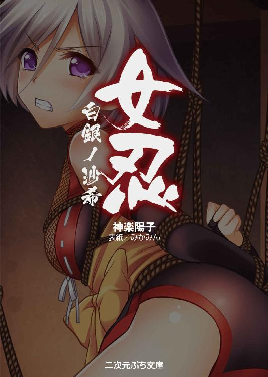
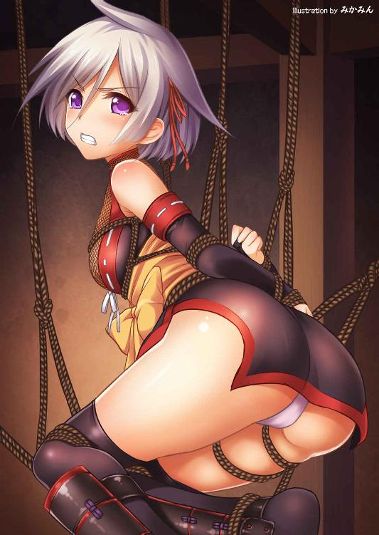

| 女忍 白銀ノ沙希 (二次元ぷち文庫) | |
| 神楽陽子 | |
| 株式会社キルタイムコミュニケーション (2018) | |

当ファイルは、モバイル二次元ドリーム『女忍 白銀ノ沙希』に基づいて作成しております。
※本作品の全部あるいは一部を無断で複製・転載・配信・送信したり、ホームページ上に転載することを禁止します。本作品の内容を無断で改変、改ざん等行うことも禁止します。また、有償・無償にかかわらず本作品を第三者に譲渡することはできません。
※本作品は電子書籍配信用に再編集しております。
世の中を乱す魍魎を狩る一族に生まれたくノ一。沈着冷静な性格で、冷気を操る技を使う。
沙希の相棒の女侍。沙希とは正反対の直情家。炎を操る技を使う。
亜の国を治める将軍。沙希たちに魍魎退治の要請を送った人物。
亜の国は恵まれていた。作物の実り豊かな土地にあり、人々は名君の治めるその国で不自由なく過ごしていた――はずだった。
いまは城下町では手槍を持った兵があちこちを巡回し、擦れ違った住人が不安げに彼らの背中を見送るばかり。
ものものしい雰囲気に街じゅうが押しつぶされそうである。
いつもなら大勢の人々が往来して賑やかな大通りも、風の音さえ聴こえるほど不気味な静寂に包まれていた。人気の牛鍋屋や茶屋でも閑古鳥が鳴いている。
「昨日は南門の方で被害が出たそうな」
「恐ろしいことだ......」
雲がかった空の下、城の絢爛な天守閣は滑稽なほどきらびやかに見え、寂しくすらある。
「物の怪、か」
最初は誰も信じなかった、人を食らう化け物の話など。しかし日を増すに連れて犠牲者は増え、目撃者も相次いだ。運良く逃げおおせた者は恐怖のあまり狂ってしまい、話すこともままならない状態である。
亜の国を治める宇将軍はこの物の怪を退治するため、兵を総動員した。しかしそれでも化け物は現れて人を食う。
いま、この国は未知なる脅威に晒されていた。
その中をひとりの女が駆けていく。陽光を避けるように人の影から影へ、建物の影から影へ。一陣の風を残し、気配は残さず前傾姿勢で街道を走り抜ける。
身の丈は五尺二寸（約百五十四センチ）と小柄で細身の女性だった。肩で切り揃えた銀髪が真正面から風を受けて旗のようにはためく。
切れ長の双眸が前方の茶屋を睨んで、青く光った。
（――ハッ！）
壁に向かって減速せず、そのまま垂直に駆け上がる。彼女は空中で前転し、屋根の上に登ってようやく止まった。疲れた様子はなく、左手を腰に当てて街をぐるりと見回す。
青い瞳が長睫毛を少し押し上げた。
「亜の国か」
言葉はそれきり、艶やかな唇を顎からキュッと引き締める。端整な小顔を包むように髪が短くサラリと流れ、神秘的な銀色の光沢もようやく落ち着く。
細くたおやかな身に黒装束を纏い、両手には指抜きの手甲をはめ、背中には小振りな刀を左右対称に差した彼女は忍者。女の忍「くノ一」である。
機能性を最優先した装束には袖がなく、華奢な肩が露出しており、着丈は腿の接合部まで見えてしまいそうなほど極端に短かった。胸の膨らみはささやかなもので、腰の位置は高く、無駄な脂がないせいもあって脚が細長く映える。
しかし脚を丸出し、という下品な格好でもない。
装束の下には襟元からもう一枚、網目状の薄生地をぴっちりと肌に重ねており、両脚も太腿から脹脛まで薄網で引き締められている。くるぶしから先は紐で縛り、忍足袋を踵にしっかりと固定してある。
顔と肩でわずかに窺える素肌は、きめ細やかで雪のように白く、漆黒の装束とはあまりに対照的だった。
彼女の名は沙希。この地からは遠く山中深くにある「光深の里」で生まれ、人食いの化け物「魍魎」と戦う術を伝授された者である。里の者は「狩人」と呼ばれ、これまでも魍魎の脅威から人々を守ってきた。
今回も亜の国から要請を受け、沙希が出動することになったのだが。
「......遅い」
くノ一は少し眉を顰め、腕を組んだ。しばらくしてもうひとり、赤毛で派手な格好の女性も屋根の上にあがってくる。
「沙希、おまたせー」
仲間の女侍、楓だった。沙希の睨み顔が鋭さを増す。
「時間厳守と言っただろう。情報は集まったか？」
「全然。まさか」
またこれだ。楓とは同期の桜で、里を出てからずっと行動を共にしているが、この女は戦闘以外で仕事らしい仕事をしたことがない。今回も情報収集と作戦の立案は沙希に任せて街を見物していたようだ。
徹底して任務を優先する性分の忍者、沙希からすれば、これほど苛立たしい相棒はいない。楓はそしらぬ顔で唐辛子をかじっていた。
辛いものが大の苦手である沙希が軽い頭痛に額を押さえる。
「......私の前で唐辛子を食うなと言っているだろう」
「あんたが食べるわけじゃないんだから、別にいいでしょ？」
愛煙家が煙草を吸う感覚で、相棒は唐辛子をかじる癖があった。常人離れした辛党なのである。もっとも、沙希も他人のことは言えないのだが。
「とにかく任務だ。さっさと魍魎を駆逐するぞ」
「さっさと、ねえ......」
楓が懐から甘味処のチラシを取り出す。
「亜の国にやけに急ぐと思ったら、こういうワケだったのね。お萩にみたらし団子」
楓が辛党なら沙希は甘党だ、それも常人では信じられないほどの。仕事を終えたら大国の茶屋で舌鼓を打つ算段である。
「この国って、菓子で有名なのね。あっちの方に店がずらっと並んでたわ」
「ずらっと......」
ごくん。しかし任務が第一だ。
「ふ、ふん......私は貴様のように仕事中に食ったりはせん」
「はいはい、それで作戦は決まったの？」
沙希は城下町の地図を広げて見せた。
「これまでの魍魎の出現場所と時刻を調べてみた。あと、兵の警戒態勢をな」
「よくやるわね」
「......誰のせいだと思っている」
屋根の上でふたり向かいあって屈み、地図に指先を走らせる。
「魍魎は決まって警備の薄いところを狙っている。睨んだ通りかもしれんぞ」
亜の国に呼ばれた沙希たちだが、入国は秘密裏に済ませた。それには理由がある。
楓も唐辛子を咥えたままで頷いた。
「んぐんぐ。じゃあ、城内の誰かに化けてるってこと？」
人肉、特に脳を食らった魍魎は、稀に人間並みの知性を得ることがある。沙希たち狩人はそれを「頭魍魎」と呼んでいた。知恵のみならず戦闘能力にも恐るべきものがあり、逆に狩られてしまった狩人もいる。
今回の黒幕は頭魍魎が人間の姿を借り、兵を誘導しては警戒の手薄なところで欲を満たしているように見えた。
「頭魍魎は......おそらく宇将軍だ」
光深の里への要請を最後に宇将軍からの連絡がない。沙希は、おそらく彼が狩人を要請した直後、頭魍魎に襲われたのではないかと推測した。この可能性を懸念して将軍と面会することはせず、城下町に潜入したのである。
人望に厚いと名高い宇将軍だ、その名と姿を借りれば、国じゅうの人間を餌食にして魍魎は爆発的に繁殖するだろう。
獲物が男なら丸かじりにして空腹を満たし、女ならば、子宮に子種を流し込んで新たな魍魎を産ませてから殺す。最悪の、魔性の生物だ。
沙希は遠く天守閣を見やり、意を決して呟いた。
「今夜だ。すぐ作戦を始めるぞ」
日を置けばそれだけ犠牲者が増えてしまう。しかし作戦はなかなか冷酷なものだった。
「楓、お前は城の西にある森に火をつけろ」
「......はあ!?」
厳重な警戒の中、城の傍で火の手があがったとなれば大騒動になるだろう。その隙を突いて宇将軍を暗殺する、という作戦だ。
楓が城の西に広がる森を指さして声を荒げる。
「ち、ちょっと！ そんな作戦、ムチャクチャじゃないの！」
沙希とは逆に直情家の楓だ、これまでも幾度と沙希と意見が食い違った。亜の国にくる道中も口論の末、楓が単独行動に出たことがある。
「街にまで火がまわったらどうするの？」
「風向きと天候くらい計算してある」
「だからって......それに、森には動物だっているのよ」
「なら、追い払ってから火をつければいいだけの話だろう」
しかし今回は相手が一国の主、それくらいせねば秘密裏に近づくことはできない。
それに消火なら奥の手がある。
「安心しろ、コトが済めば私がさっさと消してやる」
沙希は左手で背中の刀を抜いた。普通の打刀が二尺四寸（約七十二センチ）であるのに比べて刀身の少し短い「小太刀」で、ギラリと光を弾く鋭さは美しくもある。
その刃を中心に煌めく微粒子が渦を巻いた。空気が冷える。
「私の氷将吹雪桜でな」
沙希はこの小太刀と自分の気力を合わせて冷気を操ることができる。ちなみに楓の能力は「炎」で、火つけ役にはもってこいである。
「それならあたしが宇将軍をやっつけてくるから、あんたが火をつけて消しなさいよ」
「阿呆。その格好で貴様、どうやって城に忍び込むつもりだ」
この侍は堂々と真っ赤な長髪をたなびかせ、腰には野太刀、長身に纏う袴からは胸の谷間を丸出しである。目立って仕方がない。
人目を忍ぶくノ一の沙希が彼女の隣を歩きたがらない理由のひとつでもある。
「暗殺は忍者の十八番だ。作戦開始は子の刻（午前零時）」
「......はいはい、わかったわよ。どこで合流する？」
「ここで問題ないだろう。作戦開始後、小半刻（三十分）後に落ちあおう」
それからふたりは二手に分かれ、沙希は少しずつ城に近づきながら、太陽が沈んで辺りに闇が満ちるのを待った。
そして子の刻。しばらくすると、西の空が赤く染まった。大勢の兵士が街道を慌ただしく駆けていく。
「火事だ！ 街に移すな！」
その隙に沙希は東まわりに城内へ潜入した。堀を飛び越えて石垣を登り、塀を越えたら身を屈めて人の気配を探る。わずかに兵は残っているが問題になる数ではない。
西の空を仰ぐ兵士の背中を借りてやり過ごし、天井裏にあがって再び身を隠す。誰も沙希の存在に気付くことはなかった。
（宇将軍の寝室は......この正面か）
将軍の部屋へと続く回廊に抜け、音を立てぬよう爪先だけで器用に走り、前傾姿勢で加速する。人の気配はもうなかった。
代わりに邪悪な殺気を左右に感じ取る。
ガキィン！
沙希は咄嗟に二刀小太刀を引き抜いて、鉤爪を受け止めた。宇将軍の守衛か、人間の身体に狼の首を合わせたような魍魎が二匹、行く手を遮る。
推測が確信となった。
「宇将軍が頭魍魎......確定だな」
『グルルル......』
沙希は低く構え、二体の間に突進した。それを捕まえんとする魍魎の腕を、
「貴様らと遊んでいる暇はない！」
肘から切断し、返す太刀筋で両方の首を切り落とす。
『ウッ!?』
切断面がみるみる凍りついて咽を封じた。冷たい空気がひんやりと肌に染みる。
「そこで死んでいろ」
こうすれば声を出させずに片付けることができる。さらに足を走らせ、間もなく廊下の突き当たりに豪勢な扉が見えてきた。扉越しにも邪な気をぴりぴりと感じる。
（――いくぞ！）
沙希は刀で×印を刻んで扉を破り、親玉の巣に躍り込んだ。
「宇将軍、覚悟！」
しかし相手もくノ一の接近に勘付いていたのか。寝巻き姿の将軍は、部屋の中央に座して侵入者を迎えた。
「よく来たな、光深の狩人。まさかこうも容易く侵入されるとは」
「御託はいい。さっさと正体を見せるんだな」
「......よかろう」
男の身体が衣を裂いてムクムクと膨れ上がる。下半身が巨大な蜘蛛と化し、節のある脚が八本、畳に爪を突き立てる。
人間では股間、蜘蛛では腹に当たる部分からは細長い触手を垂らしていた。気味の悪さこの上ない異形である。
「ぐわっはっは、返り討ちにしてくれる！」
しかし沙希は物怖じせず、果敢に先制した。
「図体だけで勝てると思うな。ハッ！」
流星のように尾を引く青白い刀で、眼前の脚の節に斬りつける。凍てつく氷で鋭さを極めた、必殺の刃。
キィン！
ところが白刃は魍魎の身に届く一寸手前で止まった。止められたのだ。
「......厄介だな」
くノ一は床を蹴って間合いを離し、着地と同時に小振りな胸を揺らした。青い目を凝らして相手の様子を窺う。
「ふふふ、驚いたか？ どうやら同じ力の持ち主だったようだな」
頭魍魎も「氷」の使い手だったのだ、知性を得た魍魎の恐ろしさはここにある。さっきの攻撃は分厚い氷で相殺されてしまったのだ。
空気が凍え、天井から何本ものつららが伸びた。入り口も氷によって閉ざされ、白い煙が膝の高さまで蔓延する。
「運が悪かったな、死ぬがいい！」
頭魍魎の脚がくノ一の脳天に爪を打ち込もうとした。それを真横に飛んでかわし、別の脚を十字に斬り裂こうとしても、せり出す氷の壁に阻まれる。
ガキィン！
それが弾け、無数の氷塊が沙希にめがけて飛び散った。
「くっ！」
氷つぶてを二本の刀で弾いて、真上からズドンと落ちてきた脚は身を翻して避ける。
こちらも氷の手裏剣を投げつけるが、やはり同じ氷に威力を殺がれてしまった。
（......まずいな）
このままでは。狩人とはいえ沙希も生身の人間、零下数十度の中にいては身体が持たない。しかし沙希はこの状況で、刀身で渦巻く氷の粒子をさらに加速させた。
「――啼け、氷将吹雪桜！」
長期戦は圧倒的に不利だ、ならば一撃に全身全霊を賭けるまで。右手で逆手に構えた小太刀にありったけの力を集中させ、刀身を真っ白に輝かせる。
狙うは一点、「脳」だ。頭魍魎は高い知性と引き換えに中枢神経、脳という決定的な弱点を持っている。そこさえ潰せば、たったの一撃でいかなる巨躯であろうと倒せる。
「氷・刀・殺！」
絶対零度。冷気に重量さえ感じながら、沙希は初速から最高速で突進した。
「そうはさせんぞ、くノ一！」
頭魍魎が厚い氷に覆われた脚を束ねて防御を固める。
ガッキィイイイン！
氷とは思えぬ金属に似た衝突音が響いた。
「うおおおおッ！」
右手の小太刀に全体重をかけて、気迫を声にも表す沙希。分厚い氷壁にビシッと亀裂が入り、魍魎の脚もろとも粉々に砕け散る。
パリィイン！
しかしこれで限界か、氷刀殺は目標の頭部まで届かなかった。刀から光が消えていく。
「やりおるわ、しかしこれで終わりだ！ 死ね！」
そこへ頭魍魎の、残った後方の脚が獲物を串刺しにせんと伸びてくる。
だが、沙希の攻撃はまだ終わってはいなかった。
「死ぬのは貴様だ！」
背中に隠した左手小太刀をまっすぐ投げつける。その切っ先は宇将軍の眉間を正確に捉え、頭を首からもぎとった。
「グギャアアアアアッ!?」
そのまま刃は、標本のように頭部だけを壁に突き刺した。本命は左の小太刀、相手の裏をかく忍ならではの暗殺術である。
ズシン、と魍魎の巨躯が倒れるのを確認してから、沙希も膝を落とした。
「はあ......はあ......」
派手に力を使いすぎた、しばらくは身体を動かせそうにない。とはいえ倒すべき敵は倒したのだから、急くこともない。
だが。
「ひひひ......ひぃっひっひ！」
「―――――な!?」
刀を回収しようとおもむろに立ち上がり、前に歩み出た瞬間、巨体が何事もなかったかのように平然と起き上がったのである。
中枢神経を潰したはずだ、起き上がれるはずがない。しかしいま、魍魎は少なくなった脚で器用に胴体を支えて現にくノ一の視界を圧している。
「バカな、貴様は一体？」
宇将軍の腹が割れ、別の「顔」が浮き上がった。赤い目がギョロリと沙希を捉える。
中枢神経は頭部ではなく、腹部にあったのだ。
「惜しかったな、くノ一。ヒヤッとさせられたぞ」
「く、くそっ！」
右手に握った小太刀で応戦しようにも、それだけの力は残っていない。満身創痍、氷の粒子を刀身に集めることができない。
「氷将、吹雪......ざ、くら......」
「わははは！ せっかくの女だ、楽しませてもらうぞ」
魍魎の高笑いに屈辱を噛み締めながら、沙希はその場に崩れ落ちた。
なす術もなく、沙希は目の粗い縄を脇腹に通され、鎖骨と腰の高さで胴を固く縛られてしまった。さらに後ろ手で括られた両手と、脚も左右別々に吊るし上げられる。
小柄な体躯にとっても小さな黒装束が、縄にひねられて細身を食い締め、手首と足首には自分の体重がかかってギリギリと痛みが走る。
横二列に走る荒縄の間で下向く小振りな乳房がぷるんと揺れた。
眼下では冷気が白煙となって蔓延し、床を確認することもできない。扉は分厚い氷壁で硬く閉ざされる。
沙希は顔を持ち上げ、銀髪の隙間に青い瞳を覗かせた。
「く......悪趣味なヤツめ」
「ふふふ、ワシをただ犯すだけの能無しと同じにするでないぞ？」
だが魍魎を鋭く睨むも、虚勢にしかならない。常に現実を直視して確実な手段を講じてきた彼女にとって、この敗北は未だ信じられなかった。
（私が、負けただと？）
少しばかり知恵をつけた化け物風情に。悔しさに歯軋りする。
その頬に愛刀の柄を押し当てられた。
「よい刀だ、これからはワシが使わせてもらおうか」
魍魎が胴体を支える脚とは別の、イカの足に似た細長い触手で小太刀を無造作に振りまわす。自分の誇りでもある刀を玩具にされる屈辱。
そして。
「さて......子宮が壊れるまで産んでもらおうか」
沙希は嫌悪感に瞳を強張らせた。犯される、それも人外の化け物に。普通の娘ならすでに気が狂っていてもおかしくはないだろう。
しかし精神力の強い彼女は気がふれることもなく、現実を直視させられる。
（私が、も、魍魎の......子を、産むというのか......？）
青ざめた。血の気が引いた。ぶにぶにとした肉の触手で髪を梳かれ、ゾッとする。
「なっ、やめろ......くう！」
眉を顰めるくノ一の横顔をまじまじと眺め、魍魎が酷薄な笑みを浮かべた。
「なかなかの器量ではないか、喘ぐ顔が楽しみだな」
「私がそんな醜態を、はあ、貴様に見せてやるとでも？」
吐き捨てると。
「いつまで持つかな、ふふふふふ」
さらに調子付いた魍魎は、乳房の上下を横に走る縄の間で黒装束を解いた。装束の裏で首筋から太腿まで続く網生地一枚に包まれた、ささやかな膨らみが、輪郭も露に下向いてぷるんと飛び出す。
普段は意識することもない乳塊で感覚神経が敏感になっていく。
（この......！）
網目状の薄生地にはうっすらと乳白肌が透き通り、頭頂は薄紅色に染まっていた。腕の動きを妨げることのない小ぢんまりとした乳房だが、脂が薄いだけに形が美しく、綺麗な左右対称になっている。
トクトクと羞恥に高鳴る鼓動を知られまいかと、沙希は下唇を噛んだ。
「ふふふ、触り心地はどうかな？」
親指ほどの太さでどこまでも長い二本の触手が、左右の乳膨に密着してとぐろを巻く。薄網越しにもネバネバと絡みつく摩擦におぞましさが膨れ上がった。
「くぅう、う......うぅ！」
しかし逃れようと身をよじれば、荒縄が余計に食い込んでしまう。人間の舌に似てぬめり輝く触手は、小さな女肉を捏ねまわしながら、網生地に隠れた蕾を何度も小突いた。
自分でも信じられないほど乳房は柔らかく形を変え、乳頭がビクン、ビクンと断続的に脈動する。眉を吊り上げて表情では不服従を維持しても、頬は朱色に染まっていく。
「ハハハ、もう感じているのか？」
「まさか！ ......ぐ、う」
沙希は身体の中で、意志とは無関係に何かが湧き上がるのを感じた。まだ微弱だが、次第に確実に大きくなっていく存在。
（感じる、わけなど......！）
首を振って思考からそれを追い出し、忌々しげに魍魎を一睨みする。この程度で音をあげて魍魎狩りが務まるものか。
その視線を、鋭利な刃が遮った。愛刀だ。
「......な、何をする気だ？」
白刃に映った自分の顔から目を逸らす。
惨めで見ていられなかった、また悔しさが込み上げてくる。
「これの切れ味を少し試させてもらおうか」
魍魎は刀の峰でくノ一の前髪を梳きながら、装束を下から捲り、乳房と同じ薄網一枚だけの無防備な下半身を暴いた。両足首は距離をあけて吊るされ、大開脚、小振りな尻の谷間から秘めやかな縦溝まですべてが薄生地に浮かび上がる。
視界から消えた愛刀の切っ先が、沙希からは見えないそこへあてがわれた。自分の刀の切れ味なら自分が一番よく知っている。それをあえて、尻の渓谷で味わわされた。
冷たく鋭利な感触が谷間を上から下に駆け抜けていく。
「んく、ふぅう......！」
少しでも動けば身が切れてしまう。自ら可能なだけ股を広げて刃を通す。恐怖か、それとも別のものか、静止しようにも小さな震えが止まらなかった。
「震えているぞ、自分の刀に臆したか？」
「な、何を言っている」
ようやく切っ先は縦断を終え、網生地が綺麗に裂けた。つるんとして張りに恵まれた小尻が左右とも、谷間から半分ずつ露出する。
谷底に現れたのは、褐色の陥穽。小皺を一点に集めて内側に窄んでいる。
魍魎はあまった触手で、部屋にある蝋燭に火を灯した。沙希には意図が読めない。
「さて、まずはたっぷり仕返しといくか」
むしろ前方の女穴に意識が向いていた。見られはしまいか、触られはしまいか。どちらにせよ、鬼畜に屈するつもりはない。
ところが魍魎はくノ一の予想の裏をかいて、肛門を責め始めたのである。後ろの穴がジュッと燃え上がり、沙希は思わず目を見開いて声を吐き出した。
「んくぁあああ!?」
ドロリ、と尻の谷間を熱いものが流れた。首だけ振り向いて驚愕する。
溶けたばかりのロウを肛門にまっすぐ垂らされたのだ。また一滴、落下する。
「はあああ！」
さすがの沙希も、もがくほど縄が食い込むのも忘れて悶絶した。
熱い。一滴一滴に宙吊りの腰でのたうち、呼吸の緩急を乱していく。
「や......やめろ、くうっ！」
「何をやめろと言うのだ？ 悦んでいるではないか」
「だっ、誰が――あ！」
灼熱は菊花の裏にも染み渡り、直腸を焼かれるかのようだった。冷気の漂う部屋の中でロウは増して熱すぎる。
尻穴の感覚が業火に包まれ、門が開いているのか閉じているのかもわからない。沙希は煮えたロウの流動に、自分がまさか汚物を垂れ流しているのではと錯覚に陥った。柳腰に纏わりつく黒装束を抜けた向こう、小尻の神経を研ぎ澄ませる。
（そ、そんなはずはない！）
直腸で異物感が急速に膨らみ、菊皺が緩んだ。ロウを浴びて肛門がヒクつき、黄ばんだ汁を滲出して裂けた網生地を肌に粘着させる。
（熱いだけだ、熱い......だけだ！）
沙希はいまにも萎えそうだった気力に活を入れ、意識を小穴に集中させた。魍魎の爪や牙で引き裂かれるのと比べればどうということはない、はず。
しかし不浄な穴は完全に制御が利かず、そこだけ別の生き物のように勝手に蠢いた。最初の一滴が固まる頃には括約筋も解れ、穴は出すでもなく呑み込むでもなく、人差し指が入るくらいの輪を広げたまま痙攣している。
全身に溢れる大量の悶え汗に沙希自身がハッとした。
「はあ、はあ......く、はあ......」
額と頬には銀髪がへばりついて離れず、口は呼吸に忙しく、咽は溜まった生唾を呑み下すだけの余裕もない。切れ長の双眸がかろうじて眉尻を押し上げているものの、涙の波紋が浮かんでいる。耳まで真っ赤だ。
細身が荒縄の中で窮屈そうに折れ曲がり、毛穴という毛穴が開いて牝の体臭が立ち込める。そこをさらに、触手が乳頭を摘んで引っ張った。
「ひぎぃいいいッ!?」
もはや陵辱ではない、性拷問だ。すべての関節が悲鳴をあげる。しかし痛みのあとにはどこか心地よい余韻が残り、理性の堤防に黒い高波が打ち寄せた。
感じている――まさか。抵抗の意志を貫いていたはずの思考が濁り出す。
それでも満身創痍の沙希は魍魎に意地を見せた。
「はあっ、か、狩人を......舐めるな」
憎悪の念を燃やしていなければ自分を失ってしまいそうだった。その極限状態で、魍魎はいよいよ沙希の秘園に魔の手を伸ばす。
ロウまみれの肛門の下では、薄紅色の肉唇が大きな花を咲かせていた。
「はっはっは！ いままでの誰よりもひどい濡れようだな」
認めたくはなかったが、確信するしかなかった。自分の肉体はこの拷問で淫らに感じているのだ。首を倒して窺うと、ロウでも腸液でも、尿でもない透明の粘液が、姫割れから垂れ落ちている。
今度は小太刀を逆さに、柄を秘門に押し当てられた。自分のよく知る太さ、硬さをしたもので、あろうことか敵に女の部分を辱められるこの屈辱。
（くそう......私が、こんなヤツに......ッ！）
無意味に等しい責め苦で精神を打ちのめされ、そして次は肉壺を嬲られるのか。愛刀の柄を浅く咥えて綻ぶ牝花が、赤腫れた粒身を淫靡に濡らす。
芯に金属の通った柄は柔肉にとってあまりに硬く、開いた脚に甘い痺れが走り、初めての拡張は想像以上に淫猥に感じられた。
「こんな、く......うっうぅう！」
ゴリ、ゴリ。しかし異物は直進せず、角度を変えてあくまで浅く、入り口を舟形にこじ開けるに留まった。薄紅色の秘肉が外気にも過敏に反応し、縦長に伸ばされた尿口から甘露を分泌する。
「随分と解れているようだな？ 好き者め」
「ふん......はあ、下衆が......！」
魍魎は秘壺がすっかり緩んでいるのを確認すると、小太刀を抜いた。空白の性感帯が切なそうにピクピクと疼く。そこへ魍魎が、先端に孔のある触手をあてがった。
「下衆？ ひっひっひ、ドロドロに濡らしているお前がよく言えるものだな」
子種を噴出する魍魎のペニス。
汚らしく白濁した腐粘液がビュルビュルと溢れ出す。
（――――――!?）
さっきのロウよりも熱く、生卵のようにドロリとした流動体が肉壺を逆流してきた。肉襞の噛みあう隙間にも燃えるような高温と液体の感触が浸透していく。
今度は前の穴で異物感が膨れ上がり、白濁汁が不気味に流動する。それは処女膜の秘孔をヌルリと抜けて子宮さえ満たしていった。
「あっ！ な......何を、くあ！」
沙希は拘束された背中で震えるほどの怖気を禁じえなかった。心臓が萎縮し、瞳には水膜が揺らめく。人間とはまったく別のものを産まされる恐怖。
残された処女膜の表も裏も腐粘液に浸されていく。
膣を真下に向けて流し出そうにも、身をよじれば荒縄が小柄な身を食い縛った。
「ぐぅううう、だ......出せ......」
「すぐに出てくるぞ？ 数分もせぬうちにな」
沙希は逆さ開脚に病的な痙攣を走らせ、わななく唇を開いて舌を伸ばした。弓形に引き締めていた眉も虚しく倒れ、頬がさらに赤く上気する。
「う？ ううっ、くはぁあ」
腹の底で子宮がボコボコと煮立ち、重量もズシリと増す。最初は汁だけだった感触の中に固形物が見え隠れし、次第にそれが明瞭になってきた。
（な、なんだと......）
動いている。腹の中に「生き物」が、それも複数潜んでいる。しかし怖気に震えているのか、快感に震えているのか。いまの沙希には、何が自分の肉体を支配しているかさえわからなかった。
恐ろしいはずだ、それでも肉体は甘い拡張感に疼いてしまう。子宮で膨れ上がった質量が肉洞を底から広げていく。
「うぐぅううう!?」
「そろそろ一匹目、か......ふっふっふ」
荒縄に拘束されながらも下腹が盛り上がり、肉壺の底で、子宮口が鶏卵ほどある肉塊を吐き出した。
魍魎の幼体。絶望と戦慄に沙希が瞬きも忘れ、双眸を強張らせる。
「や......やめ、ろ......！」
内なる侵入者はヌルリとした身を秘粘膜に馴染ませながら、半回転も加え、狭道を強引に押し開いた。
ズリ......ズリ、ズリリッ！
「くっ、うぁ、あ......ああああ」
さすがの沙希も艶やかな唇を輪にして、端から涎を顎まで零した。柔肉の中で、異物がナメクジのように身を伸ばす。
おぞましいからこそ、余計に幼体を感覚で追ってしまう。
間もなくそれは処女膜に接触した。まさか、と思って唇を引き結ぶ沙希。
「くぅう......！」
しかし腰から下に力が入らず、極限状態ではもはや激痛か快感か区別のつかない、甘く痺れるようなものが全身を弛緩させる。
その隙に幼体が薄膜を裏から突き破る。秘孔が広がってブチンと裂け、瞬間、くノ一は四肢で縄を引いてしゃくりあげた。
「――んはぁあああ!?」
乙女の証を奪われた。それも、不気味で不浄な人外の化け物によって。もたげた首を支えていられず、下向いてつむった目に涙を滲ませる。
秘粘膜を伸びきらせてようやく、最初の一匹が外に出た。
『ギキィイ！』
「あああああ！」
臓物のように血黒く、感触通りナメクジのような生き物だった。しかし排出だけでは終わらず、産まれたばかりの幼体は早速、蟻の門渡りをズルズルと這い上がった。
「まだ人肉を食うための牙がないからのう。糞を餌にさせてもらうぞ」
「な、なん――ひぎぃいッ！」
ロウも冷えて固まった、だが中は灼熱の渦巻く肛門に幼体が潜り込む。ブリブリと排泄に似て嫌な音が直腸で響いた。
ヌルリと軟体が奥へ奥へと滑り込み、尾てい骨の高さまで這い上がってくる。肉擦れが伴う愉悦はさらに背筋を駆け上がり、脳髄をジリジリと焦がした。
ズルズル！
ビクンと、くノ一の肢体が反り返った。
ズルズル、ズルズルズル！
「ひ......ひぃ、やあああ......！」
すすられている。沙希自身が直腸で醸成した「餌」を、魍魎の幼体が貪っている。抵抗の意すら表すことができず、くノ一は手足で縄を引いて肛虐に悶絶した。
そのうえ。
「そろそろ二匹目か？」
子宮で次の幼体が形になり、身を引きずって開通した肉壺を抜けていく。沙希は魍魎の子よりも先に白濁を湧かせ、舵先の粒身から滴らせた。
「あ......あぁ、んふぁあああ......！」
肉の輪が千切れんばかりに広がり、淫猥な摩擦を残す巨大な肉塊をヌルリ、と排出。吊るし上げられた沙希は首を巡らせ、銀髪を波打たせ、必死に餌場の肛門を閉ざそうとするのだが。
「ぐうっ、く......ひはあ？」
先に入った一匹目が裏からこじ開けてしまう。二匹目もニュルンと滑り込み、腸壁を吸引される凄惨な肛虐。そこから全身が裏返るかのように神経が剥き出しになっていく。二匹の幼体はすでに狭穴の容量を超えており。
幼体は早くも成長を始め、窄まる肛門から極細の触手を外にしならせた。三本、四本と競いあって伸び、菊花から生えたそれはまるでめしべのようだ。
それらの触手が腸液を滴らせながら、沙希の細身に絡みついていく。装束の裏を腰からうなじへ貫通し、網生地の脇や裂け目から直に肌にも吸いついてくる。
おぞましさに神経を研ぎ澄ませた沙希には、小指程度の太さしかない肉紐からでも、不気味な感触を最大限に拾い集めた。
「はぁ、や、んふう！」
荒縄拘束ですでに空間に余裕がない装束、網生地の裏に挿し込まれる触手。ぶにぶにとした蠕動を嫌というほど肌で知らされる。
気丈な沙希もとうとう朦朧とし、脳裏を白濁とさせていった。
（わ、私が......はあ、そんな......！）
もう気が狂いそうだ。人外の化け物にまだ嬲られるというのか。
そして、淫らに感じているというのか。
「またいやらしい汁を垂らしおって。それほど気持ちよいのか？」
トロリ。
「はああ、あ......ああぁ......」
沙希の肉壺は紅鮭色が潤沢を見せるほど汁にまみれ、湯気が立つほど熱化していた。薄網にもジワジワと染み込んでいく。
脚に絡みつくのは触手ではなく、自分の発情汁。とめどない分泌に沙希は初めて涙すら流したが、肉体はむしろ昂り、鼓動の速度をはね上げた。
「うっく、はあ、い、いぎぃいいいッ！」
三匹目。内側からボコボコと腹を打ち、その軟体を頻繁に屈伸させ、新鮮な発情汁を押し出しながら這い出てくる。
開通したばかりの肉洞で無遠慮に身をひねられ、肉襞が捲れて秘粘膜が渦状に伸び、快楽電流が肉洞だけでなく体表にもビリビリと迸る。全身の毛穴が開いて恥汗に蒸れた。
「うく、はあっあ」
関節という関節が痺れ、肺が灼けて吐息が色めく。小鼻も鳴らしてうなだれ、揺れる銀髪の中で双眸が虚ろに焦点を外す。
「ひはぁ......うぐっ、ぐぅう！」
滝のような汗を流して、沙希は三匹目を産まされた。愛蜜が羊水のごとく噴き出す。
ブシュウ！
凍えるほど寒いはずの部屋の中央で、くノ一の身体は芯から火照り、いまや全身にロウを垂らされているような錯覚さえする。
肛門から一匹目が脱出したところへ、三匹目が頭から突っ込んだ。一匹目は触手で母体の細身にぶらさがったまま。
「んくあああ！ や......やめ、はあ......はあっ！」
ブルブルとざわめく尻にまたも異物を注入され。上半身では、網生地の裏で秘めやかにしこった乳頭を根元から括られてしまう。
涙の波紋に波紋が重なり、脳裏が端から朱色に染まっていった。
（だ......だめ、だ......）
虚脱を極めた肉体の中で吹き荒れる法悦にもはや、徹底的にいたぶられて弱った心だけでは抗えず、何もかもが高まる官能に溶かされていく。
触手が胸肉を絞り、直腸をなお貪られ、子宮では四匹目と五匹目が産声をあげた。
「や、やめ......ろ......あっあああ！」
ズブズブズブ！
肉洞が底から拡張し、さらに膨張する幼体がカズノコ襞を引きずっていく。指の関節が白くなるまで拳を固くして、必死に臨界を食い止めるも。
「ぎぃいいぃ、く、ぐぅう」
二匹分の拡張に柔肉がひしゃげ、全身をぞわぞわと快感が這いまわる。視界は旋回して涙でぼやけ、上も下もわからない。
小振りな乳肉を三角形になるまで引っ張られ、肉壺と肛門をグチャグチャと行き来する肉の感触が、虚脱した肉体を快楽に目覚めさせようとする。
（わ......私、は......）
高まる快楽にもはや思考は追いつかなかった。二匹目と三匹目が、四匹目と五匹目に餌場を譲り、空腹を満たした幼体は触手をしならせる。
菊門からは無数の、もはやどの幼体のものかわからぬ触手が放射状に溢れ、肉紐は沙希の胴をぐるぐると登って首筋に達した。
腐臭が鼻先に立ち込め、不浄な汁の滴る触手がうねって頬にもへばりついてくる。だが生理的な嫌悪感よりも、沙希は高まる官能に翻弄された。
「ぐ、くぅ......んふぅう！」
直腸では養分を得た分だけ幼体が肥大化し、物理的な圧迫感に肛門が破れそうだ。触手一本が抜け出るだけでも擬似排泄感に身震いする。
同時にぱっくりと広がった姫割れの底ではまた幼体が形になる。それを導くかのように甘露が流れて肉洞を潤した。
「さすが狩人だ、まだ産めるのか。はーっはっは！」
六匹目なのか七匹目なのか。もう数もわからず、沙希は恍惚を垣間見た。土手はもっこりと盛り上がり、直腸は収縮して肛門から零れた触手を波打たせる。
（あ......あああ......！）
彼女の中で何かがぽっきりと折れた。左右のこめかみから頬を涙が伝う。
「ひはあぁ、は......んふあああっ！」
どこにそれだけの余力が残っていたのか、沙希は自ら股を水平になるまで広げ、窮屈な拘束にもかかわらず空腰を打った。手足を吊るす縄が反動を与えて加速をつける。
触手はうなじも耳の裏も舐めまわし、涙を掬って銀髪を梳いた。肉体は完全に拘束されて、心は快楽に押しつぶされる寸前の、哀れで淫らなくノ一。
子宮がカッと過熱し、魔性の子を肉洞から押し出していく。
魍魎の幼体が膣を脱した順に肛門に潜り、直腸を貪り返すおぞましい連鎖。ついには生み出す速度が上回り、直腸に三匹、四匹と溜まって膨張する。
しかしもう恐怖はなかった、絶望もなかった。
ヌチャッ！ ヌチャッ！ ヌチャッ！ ヌチャッ！
グチャグチャと絡みあう肉の感触だけが大きくなっていく。
「はあ......はあ、い......いぃ」
広がる肉輪から幼体を吐き出し、沙希は陶然とした。
理性の殻を破って牝の本能が産声をあげる。
「いいっ、も......もっと、出るうぅ！」
肉壺から幼体を押し出す勢いあまって、肛門からも血黒い物体を噴いた。
ブリブリブリブリ！
排出の恍惚。菊皺がなくなるほど肛門が広がって痙攣し、ビュルビュルと新たな触手が宙を旋回する。沙希は腰を振って快楽の到来を歓迎した。
「あはぁあ！ はあ、そ、そこぉ！」
人間らしい感情を失った、惨めな牝の淫らな悶絶。涎をぶらさげたまま唇の端を吊り上げて、青い瞳は惚けてしまっている。
「はっはっはっは！ そうか、気持ちいいのか？ くノ一！」
そうだ。
「んはあ！ はぁ......いっ、いぃ！」
気持ちいいのだ。歓喜の涙を流してみっともなく涎を垂らし、荒縄と触手で全身を拘束されながらも、柳腰を器用にひねってよがらずにはいられないくらいに。
「はあんっ出る、また、またおっきいのが出るぅうう！」
あれほど拒んでいた臨界を、いまは越えたくてたまらない。白銀の髪も波打たせて宙吊りの腰を加速させ、呼吸を速く短く刻んでいく。
「はあ――はぁ、はあ、はあ、はあ！」
子宮がこれまで以上に膨れ上がり、感覚の溶け落ちそうな甘い快感に耽溺し、沙希の脳裏は空白に落ちた。
許容量を越えた肛門から大量の触手がブシュッと溢れ、汚い汁を吐き散らす。
「はああぁ......！」
甘美な法悦が子宮の側から肉壺を駆け抜けた。はね上がる鼓動が小振りな乳房を弾ませて頭頂をしこらせ、血管が千切れんばかりの脈動に全身が悲鳴をあげる。
沙希は押し流されるままに果てた。
「あっ、ああ......んっあはあああああ―――――！」
ほっそりとした肢体からは想像もつかぬほど大量の肉塊を秘壺から産み落とし、直腸もギュウッと収斂を極めて中身のすべてを吐き出す。
前からも後ろからも、赤黒い軟体を押しやってしぶきがあがった。
プッシャアアアアア！
恍惚とした沙希は、唇をだらしなく開いたまま、双眸でうっとりと妖しく笑んだ。白銀の髪が額やうなじにへばりつく。
（あ......あはぁ...............！）
声にならない声をあげて打ち震え、肉悦に陶酔する。黒装束は裏返るほど乱れて、肌に吸いつく網生地は蒸れあがり、触手の巻きつく四肢はひどく痙攣していた。ぱっくりと開いて外気を吸引する真っ赤な肛門と秘壺を覗き込んで、魍魎があざ笑う。
「ひあっはっは！ いいザマだな！ さあ、もっと産んでもらおうか」
しかし官能に屈したくノ一は、何も答えられず。
（わ、た......し......）
沙希の思考が完全な闇に閉ざされていく。
だが、まさにそのとき。扉を閉ざす氷壁にビシッと大きな亀裂が走った。何者かが躍り込んで来る。
パリィイン！
頭魍魎が振り向いて構えた。
「狩人め、もうひとりいたか......？」
現れたのは野太刀を握り締めた赤髪の女侍。
沙希の相棒、楓は、吊るされた仲間を見つけて歯を軋ませた。
「よくも......沙希を」
「ひあっはっは！ 貴様もすぐ同じ目に遭わせてやろうぞ！」
魍魎が無数の氷つぶてで先制する。
しかし、つぶては女侍を寸前にしてジュッと蒸発した。
「な、なんだと？」
楓の身体が火柱に包まれていく。彼女の野太刀が真紅に輝いた。
「吼え猛れ、焔刀火具土！」
ゴオオオオッ！
すべてを焼き尽くす紅蓮の炎。部屋じゅうの氷がみるみる溶け崩れていく。
氷を操る頭魍魎にとって、天敵だった。態度が一変する。
「ひっ、ひいいい！ ほ......炎の、狩人！」
「沙希は返してもらうわ」
「わ、わかった返す！ 返すから、や、やめ――」
ゴウッと炎が荒れ狂った。
「たああああッ！」
ズガアアア―――――ン！
轟音に城が揺れる。魍魎は幼体もすべて断末魔を残し、炎の中で塵と化した。
「ぎぃやあああああ！」
勢いあまって火のまわり始めた部屋の中、刀で縄を切って沙希を降ろす。
「沙希！ 沙希、大丈夫!?」
「か......かえ、で？」
ようやく沙希は我を取り戻した。
「！ 頭魍魎はどうした!? お前がなぜここに？」
「あんたが集合時間に遅れるから、ただごとじゃないと思って飛んできたのよ。魍魎なら片付けたわ」
「そう、か......すまない、私としたことが」
さすがに今回ばかりは楓に救われた。
しかし考えるより先に行動する困った相棒である。兵士たちの騒ぐ声が聴こえた。
「侵入者だ！ 奥にいったぞ、追いかけろ！」
「本丸が燃えているぞ！ 兵をまわせ！」
沙希が楓を睨んで尋ねる。
「お前、まさか......その格好で正面から入ってきたのか？」
「え、ええっと。まあ、そんなところ」
「阿呆、さっさと逃げるぞ！」
沙希は刀を回収すると、楓と一緒に屋根に抜け、焼け崩れる本丸をあとにした。
☆
翌日、城下町は大騒ぎになった。城の焼け跡から宇将軍と巨大な化け物の亡骸が発見されたのである。
「聞いたか？ 将軍様が物の怪と相打ちなさったそうだ」
「惜しい方を亡くしたのう......」
人々は宇将軍の死を悲しみ、同時にその最期を称えた。
真実を知るのは楓と。
「将軍は死んじゃったけど、これで亜の国は大丈夫そうね」
「さあな。後継者問題でしばらく荒れるぞ？」
沙希のふたりだけである。
「あんたはどうしてそう、性根の曲がったものの見方しかできないわけ？」
「貴様こそ。少しは後先を考えて行動しろ」
くノ一の指さす方向には丸焼けになった城がある。
「いいじゃない、誰かが死ぬよりずっと」
「......まあな」
しかし今回、楓がきてくれなかったらどうなっていたことか。
何にせよ任務は完了である。
「次の指令がくるまでこの街で待機だ。それまで自由行動としよう」
「はいはい、かき氷なり餡蜜なり、どうぞごゆっくり」
「......うるさい奴だな」
そこへ一羽の伝書鳩。光深の里からの報せだった。
楓が受け取って文を広げる。
「なになに......嘩の国で魍魎出現。そのまま西に渡って退治されたし」
ギクリ。しかし逃げるより先に装束を掴まれてしまった。
嘩の国、名物は激辛料理。
楓が瞳を輝かせ、沙希は珍しく涙目になる。
「さあ、いくわよ沙希！」
「まっ待て、一杯でいいから食わせろ！」
「何言ってるの、任務は最優先。一刻も早く嘩の国から魍魎を追い払わなくっちゃ」
本音は当然、
「ああ、キムチにチゲ鍋......いまいくわ！」
「お萩！ みたらし団子！ クリーム餡蜜～～～～～！」
沙希はそのまま、相棒にズルズルと引きずられて亜の国を去るのであった。

二次元ぷち文庫
女忍 白銀ノ沙希
著者 神楽陽子
発行 株式会社キルタイムコミュニケーション
〒104-0041 東京都中央区新富1-3-7ヨドコウビル1Ｆ
編集部 TEL 03-3551-6147／FAX 03-3551-6146
販売部 TEL 03-3555-3431／FAX 03-3551-1208
URL http://ktcom.jp/
©Youko Kagura 2018
当ファイルは、モバイル二次元ドリーム『女忍 白銀ノ沙希』に基づいて作成しております。
※本作品の全部あるいは一部を無断で複製・転載・配信・送信したり、ホームページ上に転載することを禁止します。本作品の内容を無断で改変、改ざん等行うことも禁止します。また、有償・無償にかかわらず本作品を第三者に譲渡することはできません。
※本作品は電子書籍配信用に再編集しております。